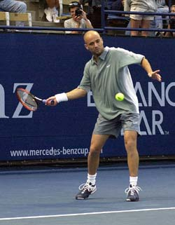
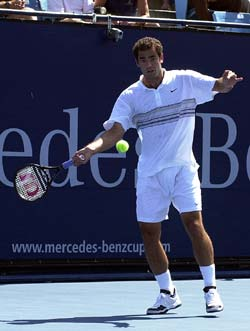
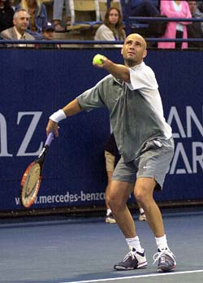
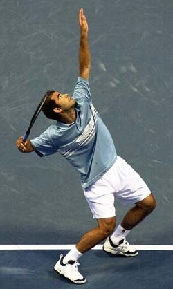
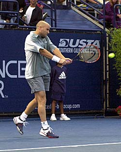
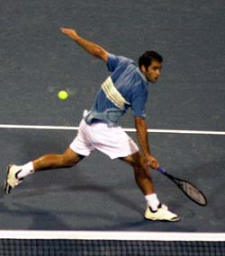

Previous: The Tactical Universe | 🏠 Strategy Home | Next: The Warrior Sport
The Unknown Statistic: The Forced Error
Comprehensive unified tennis knowledge base — Fundamentals, Stroke Analysis, Reference Library, and more
The Unknown Statistic:The Forced Error
John Yandell

An "unknown statistic": Andre forced 26 errors with his forehand groundies, returns, and passes.
What can statistics really tell us about tennis matches? What can we learn from the classic Agassi versus Sampras match at this year's U.S. Open, for example? What about junior and club tennis and all the other levels of the game? What can the average player learn from statistical analysis of his game?
The answer is a tremendous amount. Match charting allows any player to understand how points are won and lost. It's shocking how few players can tell you how they actually win or lose points. It's equally shocking how many players have wildly mistaken notions about how they win or lose points.
Understanding the types of shots and shot patterns that lead to winning points can revolutionize how you play matches. It's even possible to reverse the outcome in long standing rivalries if you understand what really pays on a percentage basis over the course of a match.
In this new series we'll look at what statistics can tell us about how to win matches, starting with an analysis of what I call the "unknown statistic," the forced error.
The Forced Error
I call forced errors the "unknown statistic," because unfortunately they are not recorded by most official tournament scoring or in TV statistics. Yet it may be the most critical shot category, and usually decides matches at the pro level, and every level below.
So, what is a forced error? A forced error is a ball which a player has at least the possibility of making a return, is able to execute something approximating a regular swing, but is unable to control and return the shot. The result is an error, but this is different than an unforced error. The error was "forced," due to the pressure and/or placement of the other player's ball.
A ball that gets by the player entirely or careens off the tip of his racquet is an obvious winner. But when a player has a legitimate swing on a difficult ball and is unable to put a shot into the court, even if it isn't a high percentage chance, the point should be scored as a forced error.
To a certain extent, determining a forced error is a matter of judgment. A ball which forces an error out of one player may prove no problem for another player, or even an opportunity to attack. Andre Agassi may handle a big Sampras serve and hit a great return for a winner. Another player might shank the same ball into the stands.
Or a reverse example: Agassi might hit a big crosscourt forehand that would be unplayable for most players, creating a forced error. But Pete might reply with an even stronger crosscourt of his own-this was at times the case in their Open match, as we shall see.
The forced error is a gray area and varies with the skill of the players. At times, a ball hit to a player forces an error. At other times, the same player responding to the same ball manages a reply.
But if you start to watch for them, it possible to recognize what constitutes a forced error at every level of play. This is critical because forced errors usually account for at least 25% and up to 50% or even more of all points.
Agassi vs. Sampras
So, what did the official statistics tell us about the Sampras/Agassi match and the role of this critical number? Sadly nothing!
If you went to the Open website during the event, you had access to a seemingly unlimited amount of statistical information. You could generate a statistical report on every match played in every division - men's, women's, singles, doubles, junior, and senior events. You could get aces, double faults, winners, errors, net approaches, and serving percentages. You could even study the average serve speeds to all 4 corners of the service box for every player. But not forced errors-and this is true of the television statistics as well.
Another view of course would be to say: "Hey it went to 4 tiebreakers--what effect could the overall stats have had on those--isn't it more important to understand those 4 breakers?" That's short-sighted. In reality the outcome of all matches--even those with multiple tiebreakers--usually depends on what happens in the give and take of the individual points from game to game.
Over 95% of all matches are won by the player who wins the most total points in the match. More than likely the player who has the upper hand over the course of the match, no matter how slim, will come out on top. This is what happened in the Agassi/Sampras match. In fact, Andre's mental let down in the last 3 breakers probably resulted from attrition over long tough battle by a razor thin margin, and Sampras's unexpectedly strong play off the ground. The overall stats really do tell the tale, so let's see how and why.
It turned out that the "forced errors" were the key to understanding this match, as with most matches. So, let's examine why.

The big surprise was how well Pete's forehand matched up in critical crosscourt exchanges.
Let's start by looking at some of the things the official statistics did tell us. First, the total number of points won by both players. Over 4 tiebreak sets Pete won a total of 173 points. Andre won 161.
That's a difference of only 12 points over 4 sets! It means Pete won about one more point than Andre every 4 to 5 games! Anyone who watched the match saw how close it was and the statistics back that up.
But what was the difference and how did Pete actually create that razor thin margin of victory? Here is where the official statistics fail. It's impossible to tell. This is because the Open website and TV coverage report track points won in only 2 categories: winners and errors.
Let's see what the official statistics in these two categories tell us about Agassi/Sampras. If we look at winners, including aces, Pete had a big edge. In the official numbers, he hit 102 winners-almost 2 clean winners in every game. Agassi hit 73 winners, about 25% less than Pete.
But Pete's advantage in total winners was offset by his unforced errors. Pete had a whopping 51 unforced errors. Agassi only 22.
So, let's total up the official stats on winners and errors. Pete had 102 winners, and he won 22 more points on Agassi's unforced errors. That's 124 points won by Pete that official stats account for.
Andre had 73 winners and won 51 points on Pete's unforced errors. Guess what? That's also a total of 124 points. 124 points each! Exactly the same number of points for Pete and Andre counting all winners and unforced errors. According to the official statistics it was a dead heat. So, what's going on here?
What the Official Statistics Show
Pete's Points Won
Andre's Points Won
Aces
24
18
Winners
78
55
Opponent's Double Faults
4
12
Opponent's Unforced Errors
18
39
Total
124
124
Note that the points on winners and errors in the official stats don't equal the total points won by either player. They account for only about 75% of the total points played (248 out of 334 points). The remaining 86 points-25% of the total points played--are unaccounted for. And those 86 points are more 7 times the point margin in the match.
What the Official Statistics Don't Show:
Pete
Andre
Total Points Won
173
161
Points Accounted For
124
124
Unexplained Points
49
37
Although there is no official record, these unexplained points were presumably decided by forced errors. But without knowing the real numbers it's impossible to see the real statistical difference in the Sampras/Agassi match, or most close matches for that matter.

Agassi served better than expected, but was it good enough?
Without the forced errors, the stats in some pro matches can even look crazy. The loser can look better statistically than the winner. For example, one player could hit fewer winners, and make more unforced errors, butt he could still win the match by creating enough forced errors, even though the official stats would show him losing in all categories! I've actually seen that in pro match stats from the Open.
So, what about those unaccounted points? Were they all unforced errors and what was their actual role in the outcome of Sampras/Agassi match? To find out, I decided to chart the match from scratch from the videotape. The results were surprising in several ways.
At one level, the unforced errors confirmed what most astute observers saw. Andre served better than expected, and Pete played much better off the ground than expected. But they also showed the relative effect of Andre's serving and Pete's ground play on the outcome of the match. What the forced errors show was that Andre's better than expected serving wasn't enough to offset Pete's surprising play off the ground. Read on and find out why.
Remember the official match statistics left 86 points unaccounted for, these presumably were the unrecorded forced errors. The overall point margin was 12 points in Pete's favor. So, of these 86 forced errors in the official statistics, 49 would have been forced errors Pete created, and 37 would have forced errors created by Andre.
The first surprise was that my own charting showed that the forced errors were higher than the official match statistics. My totals were 64 forced errors for Pete. This was 15 more than the official stats. I counted 54 forced errors for Andre. This was 17 more than the official total.
How could this be true? The official stats probably recorded some shots that I called forced errors as outright winners. That's a judgment call, but it also makes sense from the point of view of the Open, since counting more winners would help account for the outcome of more points and leave less of a gap in the statistical record.
Pete
Andre
Official Unaccounted Points
49
37
Charted Forced Errors
64
54
In any case, my charting showed the forced errors were probably even more important than what can be inferred from the official stats. So, let's see how they decided the match.
According to my charting, Pete generated 64 forced errors, i.e., hit 64 shots that were too much for Andre to handle. This was over a third of his entire point total.

Nothing Andre could do was enough to overcome the point advantage Pete created with his serve and serve and volley points.
Andre created 54 forced errors of his own. This was almost the entire statistical difference in the match--10 more forced errors generated by Pete. Essentially Pete was able to win by creating 2 or 3 more forced errors per set.
So where did these forced errors come from? One of the other glaring deficiencies in the Open website official stats is that the winners and errors are not broken down by strokes. And, of course, since forced errors aren't even recorded, they obviously aren't broken down by stroke either.
Were the forced errors that decided the match generated by serves, forehands, backhands, returns, volleys? My charting showed that most of Pete's 64 forced errors were generated by his serve, as you might expect. Pete's serve alone generated 35 forced errors, over half his total. In addition, he forced another 13 errors with his net play.
But the forced errors generated with his serve and his net game were not enough to win the match by themselves. With his serve and his volleys, Pete forced 48 errors. That was still less than Agassi's total of 54.
The rest of Pete's forced errors came on his groundstrokes, his returns, and a few passes. These forced errors generated by his groundstrokes were the key to match, as we'll see.
Let's breakdown Andre's forced errors. Surprisingly, Agassi generated 18 forced errors with his own serve. But, as you might expect, most of Agassi's forced errors were generated by the strength of his game, his groundies and returns. He generated 17 forced errors on his groundies, 14 on his returns, and another 6 with passing shots. His forehand was particularly lethal. He created a total of 26 forced errors with his forehand groundies, passes and returns.
Forced Errors
Sampras
Agassi
Serve
35
18
Forehand
5
14
Backhand
4
3
Forehand Return
2
10
Backhand Return
3
3
Forehand Pass
0
2
Backhand Pass
2
4
Forehand Volley
8
0
Backhand Volley
4
0
Overhead
1
0
Total
64
54
During the course of the match, USA commentator John McEnroe, as well as Sampras' coach Paul Annacone, stated that Pete should play more aggressively, i.e., chip and charge, and force the play at the net on Agassi's serve. McEnroe harped on it over and over, pointing out specific balls he felt Pete should attack. Only guest commentator Todd Martin, who had faced Agassi on the court much more recently than Mac offered the opinion that Pete was wise to avoid giving Agassi too many chances to hit those devastating passes.
And the bottom line is, maybe Pete knew something Mac and his coach didn't. Pete obviously believed he could stay with Andre better on the ground than people thought. He obviously thought that was a better play than constantly attacking the net.

Andre was extremely consistent, but Pete virtually matched him when it came to backhand winners and forced errors.
More than once, Pete stood toe to toe with Agassi from the baseline and came out ahead. He hit running crosscourt forehands that surprised and overpowered Andre. And he hit his backhand better and more aggressively than at any time in recent memory, making several spectacular backhand returns and backhands down the line.
And the statistics bear this out. Agassi had the edge from the backcourt, no doubt, but what was surprising was that his margin in the backcourt was so small over the course of 4 sets.
Agassi created only 17 forced errors off the ground. Pete created 9 forced errors of his own off the ground. That's only 8 points difference over 4 sets!
And Agassi did only slightly better on the returns. He created 13 forced errors, while Pete created 6. That's only 7 more for Agassi, the man with the best return in history, over 4 tiebreaker sets. And when we break down the outright groundstroke winners, it was even closer. Andre had 17 outright groundstroke winners to Pete's 15. That difference is also surprising.
The numbers are particularly interesting when we look at the backhand, historically, Pete's weaker side. Yes, Pete had more unforced errors on that side-a total of 17 versus only 5 for Agassi. But at key times in the match, he hit aggressive backhands that won points-and possibly had a mental impact on Andre, who is on record saying that the backhand is Pete's weakness.
If you combine the winners and forced errors, Pete had a total of 8 points that he won outright with his backhand. That was actually 2 more than Agassi who only had 6!
So, what the stats show is actually quite interesting. Agassi served surprisingly well, but Sampras was even more surprising with his strong play off the ground. What Andre gained with his great serving, Pete more than made up with his success in the groundstroke exchanges.

Pete made difficult volleys and half volleys look routine--all part of the statistical package.
Now don't misunderstand. Despite Andre's great serving, Pete still had a big statistical edge on the serve. And Andre still won the statistical groundstroke battle. It's just that Andre's statistical margin off the ground was a much smaller margin than most people expected. In the area where you would expect Andre to make up the point deficit created by Sampras' serve, Pete stayed closer than expected, close enough to make this incredible, incredibly close match turn in his favor.
So, what does this mean for the average player? The first point is simple awareness. Most players are only focused on their great shots and bad errors. (Some unfortunately are only focused on the great shots.) But the average player may not even know what a forced error is, much less that it often is the critical category in determining who wins the match.
That brings up the question of shot patterns. What patterns can you use, not only to hit outright winners, but to pressure your opponent into unforced errors. And where are your own errors coming from that are being forced by your opponents? (For more on this see Allen Fox's series on Winning Matches.)
For example, you might make more forehand winners, but also have more errors hitting crosscourt forehand to forehand against a given opponent. The backhand crosscourt exchange might be less spectacular, but it might be easier to force errors there. Remember, a forced error counts just as much as a winner-you're one point closer to winning the match. More on all this as this series progresses.
Next: Another "unknown" statistic: the aggressive margin. See how winners, unforced errors and forced errors combine into the "aggressive margin" and the "magic numbers" you need in this category to win matches at all levels.

John Yandell is widely acknowledged as one of the leading videographers and students of the modern game of professional tennis. His high speed filming for Advanced Tennis and Tennisplayer have provided new visual resources that have changed the way the game is studied and understood by both players and coaches. He has done personal video analysis for hundreds of high level competitive players, including Justine Henin-Hardenne, Taylor Dent and John McEnroe, among others.
In addition to his role as Editor of Tennisplayer he is the author of the critically acclaimed book Visual Tennis. The John Yandell Tennis School is located in San Francisco, California.
Source: tennisplayer.net archive — The Unknown Statistics -The Forced Error.docx (John Yandell teaching library, 2002-2022). Extracted and rendered as HTML for Tennis Future Lab.